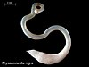

sipunculoidea

Has synonym(s): sipunculida, sipuncula
Definition: The Sipuncula or Sipunculida (common names sipunculid worms or peanut worms) is a class containing about 162 species of unsegmented marine annelid worms. The name Sipuncula is from the genus name Sipunculus, and comes from the Latin siphunculus meaning a "small tube".Sipuncula was once considered a phylum, but was demoted to a class of Annelida, based on recent molecular work.Sipunculans vary in size but most species are under 10 cm (4 in) in length. The body is divided into an unsegmented, bulbous trunk and a narrower, anterior section, called the "introvert", which can be retracted into the trunk. The mouth is at the tip of the introvert and is surrounded in most groups by a ring of short tentacles. With no hard parts, the body is flexible and mobile. Although found in a range of habitats throughout the world's oceans, the majority of species live in shallow water habitats, burrowing under the surface of sandy and muddy substrates. Others live under stones, in rock crevices or in other concealed locations.
Source: Wikipedia
Wikipedia Page (Something wrong with this association? Let us know.)
Wikidata Page (Something wrong with this association? Let us know.)